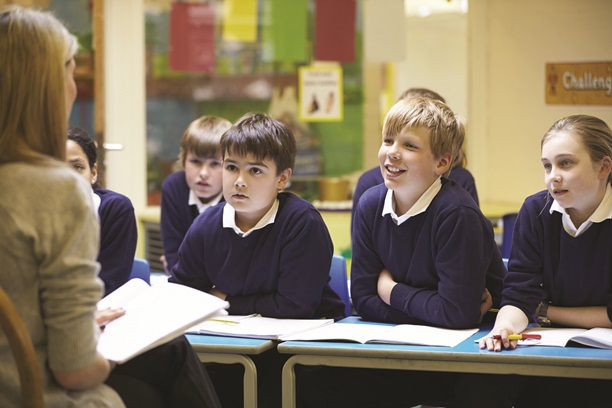
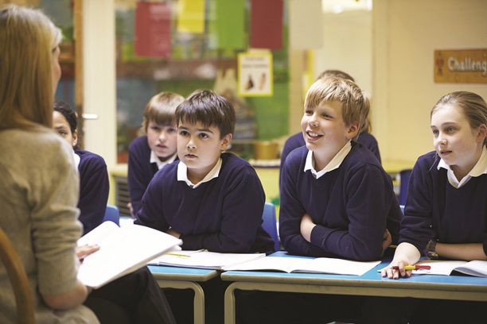

Excursión a las Fragas do Eume para 2º. EP.
El pasado jueves, los niños y niñas de 2º de primaria vivieron una aventura inolvidable.
El pasado jueves, los niños y niñas de 2º de primaria vivieron una aventura inolvidable.

Lucía, de atletismo, batió su propio récord en salto de longitud.
Entrevista con el rector de la Universidade de Santiago de Compostela. Tras la finalización, tendrá lugar un acto de preguntas y respuestas para orientar a los futuros universitarios. El acto estará también abierto a familiares y demás miembros de toda la comunidad educativa.
Celebración del XV Campeonato Escolar de petanca. Tendrá lugar en el Patio Mayor entre los principales colegios de la zona.
Evaluación de 2º de Bachillerato. Emisión de Boletines de Calificación asociados a la 3ª evaluación.
 
